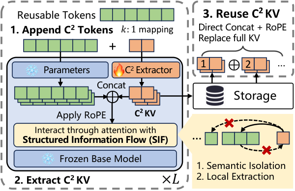

Why it matters왜 중요한가
Everyone treats KV reuse as a prefill-compute problem. At real context lengths it has quietly become a memory-bandwidth problem, and the two fixes are incompatible unless you design them together.
모두가 KV 재사용을 프리필 연산 문제로 다룬다. 그러나 실제 컨텍스트 길이에서 그것은 조용히 메모리 대역폭 문제가 되었고, 두 해법은 함께 설계하지 않으면 서로 호환되지 않는다.
The existing families each solve half of it. Prefix-based reuse is exact but only fires when requests share a literal prefix — useless for multi-document RAG where the same passage shows up at position 3 today and position 1 tomorrow. Training-free non-prefix methods (CacheBlend, EPIC) concatenate independently computed caches and then recompute a selected fraction to suppress the resulting KV deviation, trading latency for accuracy on a heuristic. Training-based methods (Block-Attention, KVLink) fine-tune the base model itself, which the authors note costs up to 10.4% on LongBench and has to be redone for every new open-source checkpoint. None of them shrink the cache, so as context grows the DRAM→HBM transfer of uncompressed KV becomes the dominant latency term. The obvious patch — add a compressor — is exactly what the paper shows does not work, because standard compressors produce representations entangled with the context they were computed in.
기존 계파들은 각각 절반씩만 푼다. 프리픽스 기반 재사용은 정확하지만 요청들이 문자 그대로의 접두사를 공유할 때만 작동한다 — 같은 문단이 오늘은 3번, 내일은 1번 위치에 나타나는 다문서 RAG에서는 쓸모가 없다. 학습 없는 비프리픽스 기법(CacheBlend, EPIC)은 독립적으로 계산된 캐시들을 이어 붙인 뒤 그로 인한 KV 편차를 억제하려 일부를 재계산하며, 휴리스틱 위에서 지연과 정확도를 맞바꾼다. 학습 기반 기법(Block-Attention, KVLink)은 베이스 모델 자체를 미세조정하는데, 저자들의 지적대로 LongBench에서 최대 10.4%의 손실을 치르고 새 오픈소스 체크포인트마다 다시 해야 한다. 이들 중 무엇도 캐시를 줄이지 않으므로, 컨텍스트가 길어질수록 압축되지 않은 KV의 DRAM→HBM 전송이 지배적인 지연 항이 된다. 뻔한 처방 — 압축기를 붙이기 — 이 바로 이 논문이 작동하지 않음을 보이는 것이다. 표준 압축기는 자신이 계산된 컨텍스트와 얽힌 표현을 만들어내기 때문이다.

By the numbers핵심 숫자
The headline table핵심 표
| Method | MuSiQue | 2WikiMQA | SAMSum | MultiNews |
|---|---|---|---|---|
| Full recompute (1×) | 0.3198 | 0.4018 | 0.3652 | 0.2685 |
| Naïve reuse (1×) | 0.1970 | 0.2681 | 0.3172 | 0.2674 |
| EPIC (1×) | 0.2498 | 0.2821 | 0.4217 | 0.2630 |
| CacheBlend (1×) | 0.2720 | 0.1334 | 0.3379 | 0.2126 |
| C²KV-4× | 0.3587 | 0.4477 | 0.3904 | 0.2532 |
| C²KV-8× | 0.3225 | 0.4462 | 0.2572 | 0.2351 |
| C²KV-16× | 0.2746 | 0.3973 | 0.3556 | 0.2234 |
| C²KV-Dyn @4× | 0.3457 | 0.4680 | 0.3779 | 0.2503 |
| C²KV-Dyn @10× (unseen) | 0.3198 | 0.4310 | 0.3570 | 0.2357 |
| C²KV-Dyn @16× | 0.2831 | 0.4298 | 0.3525 | 0.2343 |
The three ideas세 개의 아이디어
C²Tokens as learned memory slots
For a k:1 ratio, a document of n tokens gets m = ⌈n/k⌉ auxiliary C²Tokens — learnable embeddings with no lexical meaning, each logically owning one block of k document tokens. They pass through the same Transformer stack but use their own trainable QKV projection matrices per layer; the base model's projections stay frozen and apply only to real tokens. After the forward pass, only the C²Tokens' KV is kept. The C²Token embeddings plus those per-layer QKV heads are the entire trainable parameter set, which is why the base LLM cannot forget anything and can be swapped for a newer checkpoint without redoing the base model.
k:1 비율에서 n개 토큰의 문서는 m = ⌈n/k⌉개의 보조 C²토큰을 받는다. 어휘적 의미가 없는 학습 가능한 임베딩이며, 각각이 k개 문서 토큰 블록 하나를 논리적으로 담당한다. 이들은 같은 트랜스포머 스택을 통과하지만 레이어마다 자기만의 학습 가능한 QKV 투영 행렬을 쓴다. 베이스 모델의 투영은 얼어 있고 실제 토큰에만 적용된다. 순전파가 끝나면 C²토큰의 KV만 남긴다. C²토큰 임베딩과 그 레이어별 QKV 헤드가 학습 파라미터의 전부이며, 그래서 베이스 LLM은 아무것도 잊을 수 없고 베이스를 다시 손대지 않은 채 새 체크포인트로 교체할 수 있다.
Structured Information Flow — strictly one-way
The attention mask enforces three rules, and each one buys a specific property. (1) Original-token invariance: real tokens may never attend to any C²Token, so their hidden states and KV are bit-identical to the frozen base model's — the extractor is provably non-invasive. (2) Block-local extraction: C²Token c_j attends only to its own block B(j) plus a sink block B(0), which forces genuine k:1 aggregation instead of letting it peek globally. (3) Causal accumulation: C²Tokens attend to earlier C²Tokens, so document-level context still accrues. The contrast the paper draws is with anchor tokens, which attend bidirectionally with real tokens and therefore both perturb the base representations and entangle the compressed state with its original context — the exact thing that makes a compressed cache non-composable.
어텐션 마스크가 세 규칙을 강제하며, 각각이 특정 성질을 사들인다. (1) 원본 토큰 불변성: 실제 토큰은 어떤 C²토큰에도 어텐션할 수 없으므로, 그 은닉 상태와 KV는 얼어붙은 베이스 모델의 것과 비트 단위로 동일하다 — 추출기가 비침습적임이 증명적으로 보장된다. (2) 블록 국소 추출: C²토큰 c_j는 자기 블록 B(j)와 싱크 블록 B(0)에만 어텐션하며, 전역을 엿보는 대신 진짜 k:1 집약을 하도록 강제된다. (3) 인과적 누적: C²토큰들은 앞선 C²토큰들에 어텐션하므로 문서 수준 맥락은 여전히 쌓인다. 논문이 대비시키는 것은 앵커 토큰이다. 앵커는 실제 토큰과 양방향으로 어텐션하므로 베이스 표현을 교란하는 동시에 압축된 상태를 원래 컨텍스트와 얽어버린다 — 압축 캐시를 합성 불가능하게 만드는 바로 그 원인이다.
Supervision applied only after concatenation
There is no reconstruction loss and no alignment loss — just the ordinary autoregressive SFT loss on the answer. The trick is where it is applied. Documents are extracted independently, but the loss only sees the concatenated result, and the number and order of documents varies across training samples. A representation that compresses well but breaks when spliced will therefore be penalized, as will one that only works in a fixed global arrangement. Composability is not asserted by the architecture; it is the only way to reduce the loss. Sampling the ratio during training extends this to the compression axis too — one model then serves 4×, 8×, 16×, and interpolates to a 10× budget it never trained on.
복원 손실도 정렬 손실도 없다. 답변에 대한 평범한 자기회귀 SFT 손실 하나뿐이다. 요령은 그것을 어디에 거는가다. 문서는 독립적으로 추출되지만 손실은 이어 붙인 결과만 본다. 그리고 문서의 개수와 순서는 학습 샘플마다 달라진다. 따라서 압축은 잘 되지만 접합에서 깨지는 표현은 벌을 받고, 고정된 전역 배치에서만 작동하는 표현도 마찬가지다. 합성 가능성은 구조가 선언하는 것이 아니라, 손실을 줄이는 유일한 길이다. 학습 중 비율을 샘플링하면 이것이 압축 축으로도 확장된다. 모델 하나가 4×, 8×, 16×를 담당하고, 학습한 적 없는 10× 예산으로도 보간된다.
How it works어떻게 작동하나
- Offline, once per document. 오프라인, 문서당 한 번. Split the document into blocks of k, append m = ⌈n/k⌉ C²Tokens, run one forward pass through the frozen LLM under the SIF mask. Each C²Token takes the position index of the last token in its block; RoPE is deliberately not applied yet. Discard everything except the C²Token KV and store it in host memory.문서를 크기 k의 블록으로 나누고 m = ⌈n/k⌉개의 C²토큰을 덧붙인 뒤, SIF 마스크 아래에서 얼어붙은 LLM으로 한 번 순전파한다. 각 C²토큰은 자기 블록 마지막 토큰의 위치 인덱스를 가지며, RoPE는 의도적으로 아직 적용하지 않는다. C²토큰 KV를 제외한 모든 것을 버리고 호스트 메모리에 저장한다.
- At request time, re-rotate. 요청 시점, 다시 회전. Load the compressed caches for whichever documents the prompt needs and apply RoPE now, at their actual positions in the assembled sequence. Offsets accumulate as if each compressed segment still occupied the full span of its original uncompressed tokens — this is what keeps a k:1 segment positionally honest. The ablation that freezes positions instead loses accuracy on every task.프롬프트가 필요로 하는 문서들의 압축 캐시를 불러와, 조립된 시퀀스에서의 실제 위치에 지금 RoPE를 적용한다. 오프셋은 각 압축 구간이 여전히 원래 비압축 토큰들의 전체 스팬을 차지하는 것처럼 누적된다. 이것이 k:1 구간의 위치를 정직하게 유지시킨다. 위치를 고정시킨 어블레이션은 모든 태스크에서 정확도를 잃는다.
- Concatenate — and stop. 이어 붙이고 — 끝. The re-rotated segments are concatenated directly. No blending, no selective recompute, no reintroduction of original tokens. TTFT collapses to a load-only operation, which is where the speedup comes from: CacheBlend and EPIC still pay a recomputation tax on top of the same load.다시 회전된 구간들을 곧바로 이어 붙인다. 블렌딩도, 선택적 재계산도, 원본 토큰의 재투입도 없다. TTFT가 로드만 하는 연산으로 축소되고, 가속은 바로 여기서 나온다. CacheBlend와 EPIC은 같은 로드 위에 재계산 세금을 여전히 낸다.
- Decode against a k× smaller cache. k배 작은 캐시로 디코드. The saving does not stop at the first token. Because attention now reads a k×-smaller KV every step, per-token decode latency rises only mildly from 16k to 128k, where full-length caches scale near-linearly under memory-bandwidth pressure.절약은 첫 토큰에서 끝나지 않는다. 이제 어텐션이 매 스텝 k배 작은 KV를 읽으므로, 토큰당 디코드 지연은 16k에서 128k까지 완만하게만 오른다. 전체 길이 캐시는 같은 구간에서 메모리 대역폭 압력에 눌려 거의 선형으로 증가한다.
What to take away그래서, 가져갈 것
The negative result is the most portable thing here. Table 3 puts SnapKV 4× on top of five different reuse strategies and every one of them falls apart — HotpotQA drops to 0.0547 under naive reuse, 0.0743 under Block-Attention, 0.0897 under EPIC. If you are running a reuse-based serving stack and thinking of adding a compressor, that table is your warning label: context-entangled compression and non-prefix reuse do not compose.
가장 널리 쓸 수 있는 것은 이 논문의 부정적 결과다. 표 3은 SnapKV 4×를 다섯 가지 재사용 전략 위에 얹는데, 전부 무너진다. HotpotQA는 나이브 재사용에서 0.0547, Block-Attention에서 0.0743, EPIC에서 0.0897로 떨어진다. 재사용 기반 서빙 스택을 돌리면서 압축기를 추가할 생각이라면, 그 표가 경고 라벨이다. 컨텍스트와 얽힌 압축과 비프리픽스 재사용은 합성되지 않는다.
"Freeze the base, train a sidecar" is becoming the default shape for KV work, and the mask here is a clean instance of why: because information flows only from real tokens to C²Tokens and never back, the base model's own states are provably untouched. That is a much stronger guarantee than "we fine-tuned gently," and it is what lets the compressed caches be context-independent in the first place.
"베이스는 얼리고 사이드카를 학습시킨다"는 KV 연구의 기본 형태가 되어가고 있으며, 여기의 마스크는 그 이유를 깔끔하게 보여준다. 정보가 실제 토큰에서 C²토큰으로만 흐르고 되돌아오지 않기 때문에, 베이스 모델의 상태는 증명적으로 손대지 않은 채로 남는다. 이는 "살살 미세조정했다"보다 훨씬 강한 보장이며, 애초에 압축 캐시가 컨텍스트 독립적일 수 있게 하는 것이 바로 이것이다.
Composability is trainable — that is the transferable design lesson. Nothing in the architecture forces the pieces to fit; the loss is simply never shown an unconcatenated example. The same trick should apply anywhere you need independently-produced artifacts to compose later: latent messages between agents, per-tool memory blocks, retrieved episode states.
합성 가능성은 학습될 수 있다 — 이것이 옮겨 쓸 수 있는 설계 교훈이다. 구조상 조각들이 맞물리도록 강제하는 것은 아무것도 없다. 손실이 이어 붙지 않은 예시를 결코 보지 않을 뿐이다. 독립적으로 생산된 산출물이 나중에 합성되어야 하는 곳이라면 어디든 같은 요령이 적용될 것이다. 에이전트 간 잠재 메시지, 툴별 메모리 블록, 검색된 에피소드 상태.
Read the win column carefully. C²KV-4× beats full-context prefill on the multi-hop QA tasks (MuSiQue 0.3587 vs 0.3198, 2WikiMQA 0.4477 vs 0.4018) but loses on Qasper (0.3755 vs 0.4417), QMSum (0.1885 vs 0.2452), GovReport (0.2967 vs 0.3274) and GSM8K (0.6175 vs 0.6914). That is not the signature of lossless compression; it is the signature of task adaptation.
이기는 칸을 주의 깊게 읽어라. C²KV-4×는 멀티홉 QA에서 전체 프리필을 이긴다(MuSiQue 0.3587 대 0.3198, 2WikiMQA 0.4477 대 0.4018). 그러나 Qasper(0.3755 대 0.4417), QMSum(0.1885 대 0.2452), GovReport(0.2967 대 0.3274), GSM8K(0.6175 대 0.6914)에서는 진다. 이것은 무손실 압축의 서명이 아니라 태스크 적응의 서명이다.